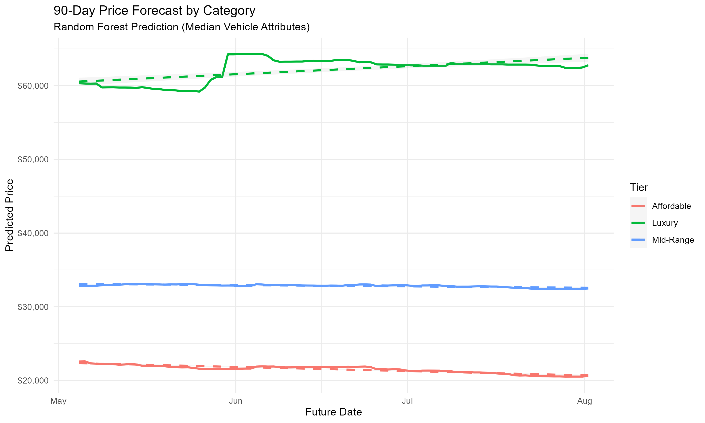

Predicting Vehicle Prices in the California Market
The Big Picture
We analyzed over 3,800 vehicle listings to understand how mileage and time influence price. Our model predicts valuation with high precision across all affordability segments.
Future Price Forecast

Interpretation
Visualizes projected market value decay for Affordable, Mid-Range, and Luxury tiers over 90 days.
Strategy
Assists sellers in timing their listings based on predicted mileage accumulation (40mi/day).
Impact
Provides a data-driven look at the cost of ownership over a standard three-month period.
The Science Behind It
Cleaning & Imputation
Missing data is a common artifact of API scraping. We used K-Nearest Neighbors (KNN) Imputation to fill in gaps for mileage and price. By comparing similar vehicles, we ensured our dataset remained robust without losing valuable rows of data.
Market Stratification
Cars aren't all the same. We split the data into Affordable, Mid-Range, and Luxury tiers to better understand how different classes of vehicles depreciate.
Random Forest Engine
Our predictions are powered by a Random Forest Regressor. It looks at hundreds of decision trees to find the most accurate price based on mileage and market demand.
Market Insights

The Correlation
This plot illustrates the inverse relationship between mileage and price. As mileage increases, the value drops—but at varying rates per tier.
Tiered Decay
Luxury vehicles (Green) show a much steeper depreciation slope, while Affordable models (Red) retain a higher percentage of value per mile.
Model Use
Confirmed mileage as the strongest predictor of price, forming the core interaction term in our Random Forest model.

Temporal Shifts
Tracks the average list price over the past 90 days. It reveals market volatility and seasonal fluctuations in the CA market.
Market Health
The stability of the lines suggests a balanced supply-demand ratio, with no sudden market crashes detected in the period.
Predictive Gain
Adding time-based variables helped the model capture broad market "drift," accounting for inflation or seasonal demand spikes.

Inventory Stality
Analyzes if "stale" inventory (high Days on Market) leads to price drops. There is a visible downward pressure as cars sit longer.
Negotiation Proxy
High DOM values often signal a motivated seller, providing a proxy for potential discount levels in the market.
Accuracy Contribution
Including DOM improved our R-Squared by capturing the "desperation" or "desirability" factor of specific listings.

Segment Variance
A boxplot showing the spread of prices within our three categories. It validates our tier thresholds (<$30k, $30k-$45k, >$45k).
Outlier Detection
Identifies luxury outliers that exceed $100k, ensuring our model handles extreme values without skewing the median prediction.
Feature Validation
Confirms that the 'Tier' category successfully separates the data into distinct, non-overlapping price regimes.
Final Summary
Our analysis provides a clear window into the California used car market. By combining age, mileage, and market demand into a single predictive model, we help consumers make smarter buying and selling decisions.